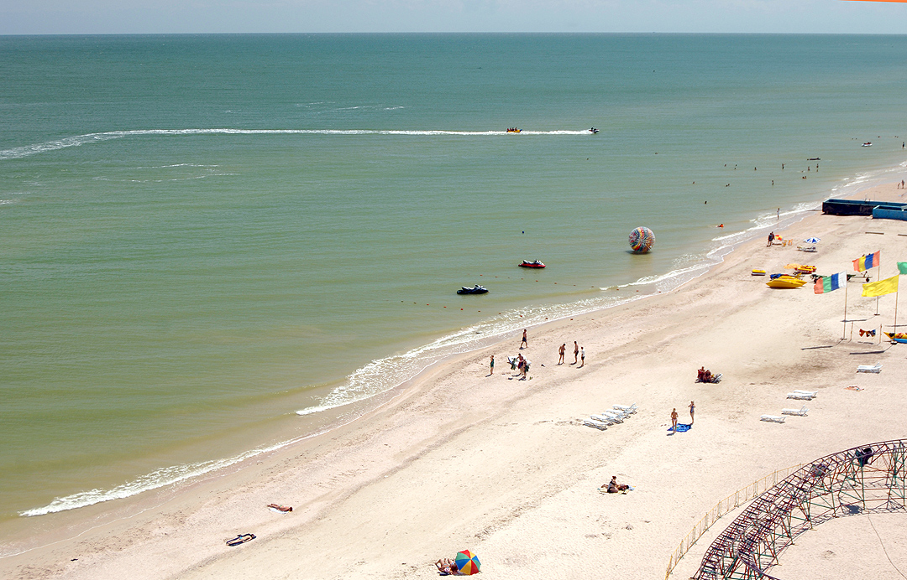
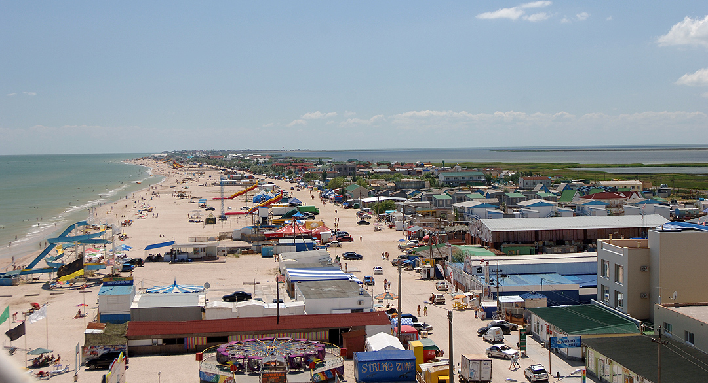

Кирилівка
Географія
історія
Кирилівку засновано 1805 року сектантами духоборами, які були примусово переселені сюди з Тамбовської та Воронезької губерній. Назва її походить від імені Кирила Капустіна, який оселився тут першим. Духоборам виділяли по 15 десятин землі на ревізьку душу і давали грошову позичку ро́зміром 100 крб. на родину. У 1838 році в селі налічувалося 130 жителів, з них 72 — чоловіки[2].
Станом на 1886 рік[3] у селах Охрімівської волості Мелітопольського повіту Таврійської губернії:
- Кирилівка — мешкало 717 осіб, налічувалося 93 дворів;
- Горіле — мешкало 1561 осіб, налічувалося 189 дворів, існували православна церква, три крамни́ці.
Починаючи з 1920-х років, розвивається бальнеологічний і грязьовий курорт, останній найінтенсивніше розвивався впродовж 1960—1980-х років. Саме в цей період вся коса Федотова і коса Пересип були забудовані турбазами, пансіонатами та будинками відпочинку.
1968 року — надано статус селища міського типу.
У 2004 році до складу Кирилівки увійшло велике село Азовське. Тоді ж активізувалася забудова.
Наразі сформувалася єдина курортна зона завдовжки майже 20 км.
3 липня 2017 року утворена Кирилівська селищна громада шляхом об'єднання Кирилівської селищної ради та Атманайської і Охрімівської сільських рад Якимівського району.[4].
17 липня 2020 року, в результаті адміністративно-територіальної реформи та ліквідації Якимівського району, смт увійшло до складу Мелітопольського району[5].
Курорт
Кирилівка є морським і кліматичним курортом та найближчим морським узбережжям для мешканців Запоріжжя та Дніпра. Після здобуття Незалежності України саме завдяки близькості селища до цих міст на курорті розквітло підприємництво. Територію на узбережжі моря почали забудовувати, а вже існуючі рекреаційні заклади — оновлювати.
На 20-кілометровій прибережній смузі діють бальнеологічний санаторій, близько трьохсот оздоровчих закладів, 14 дитячих центрів. У місті діє зоопарк, луна-парки. Лимани містять багато корисної лікувальної грязі.
У 2011 році в Кирилівці відкрився найбільший в Україні аквапарк[16] і дельфінарій.
Лікувальні засоби: мул Утлюцького і Молочного лиманів, а також сірководневе хлоридне натрієве джерело, воду якого використовують для ванн. Лікування хворих із захворюваннями опорно-рухового апарату, периферійної нервової системи, гінекологічними захворюваннями.
Літо тепле (середня температура липня 21 °С), зима помірно м'яка (середня температура січня — 6 °С); опадів близько 380 мм на рік.
Азовське море не глибоке, середня глибина 8 метрів і максимальна 14 метрів, має піщане дно і берег. Температура води в липні досягає 27-28 °С. За нинішніми природними і кліматичними умовами на дні Азовського моря дуже добре розвивається морська флора і фауна. Стабільний сезон відпочинку — від середини червня до середини вересня включно.